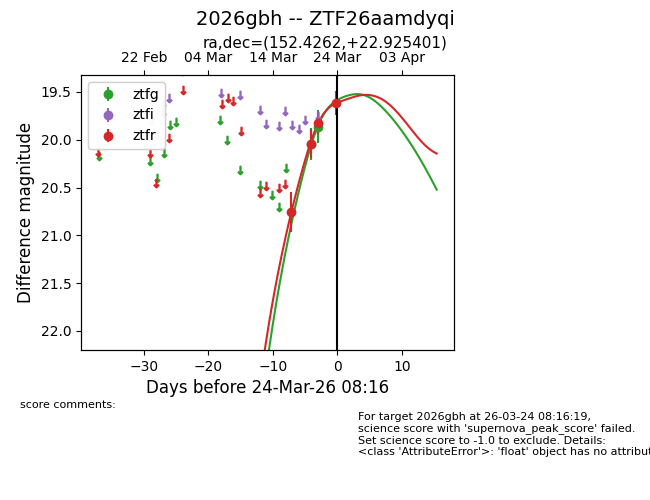
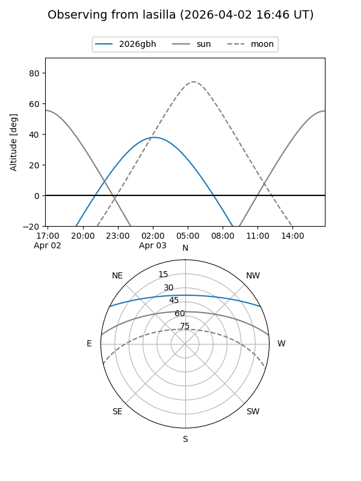
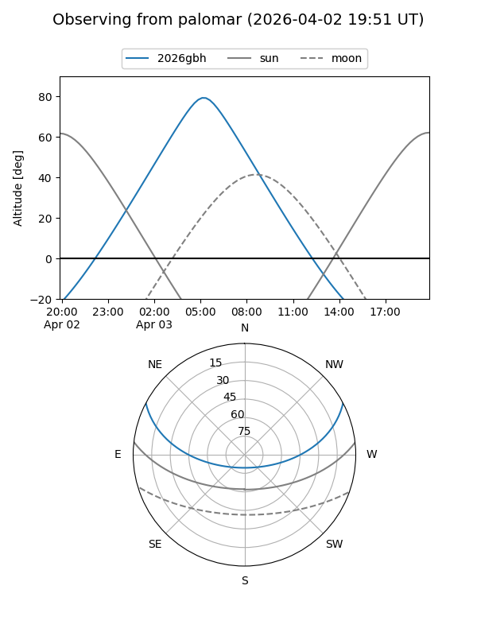
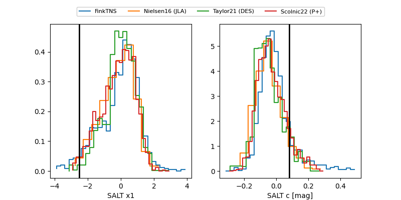

2026gbh
Target 2026gbh at 2026-03-24 08:18
Aliases and brokers:
FINK: link
Lasair: link
ALeRCE: link
TNS: link
YSE: link
alt names
ZTF26aamdyqi (ztf,fink_ztf)
2026gbh (tns,yse)
Coordinates:
equatorial (ra, dec) = 152.4262,+22.92540
equatorial (HMS+DMS) = 10:09:42.30,+22:55:31.44
galactic (l, b) = (210.3423,+53.27719)
Flags:
Photometry:
last ztfg=19.86, ztfr=19.62
2 ztfg, 4 ztfr detections
Lightcurve

Visibility


Additional plots
